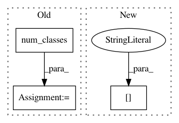

9d4bb495e2b823ae73b5bd702d0a04ec004c883d,keras_retinanet/bin/debug.py,,run,#Any#Any#Any#,165
Before Change
anchors = anchors_for_shape(image.shape, anchor_params=anchor_params)
labels_batch, regression_batch, boxes_batch = generator.compute_anchor_targets(anchors, [image], [annotations], generator.num_classes())
anchor_states = labels_batch[0, :, -1]
// draw anchors on the image
if args.anchors:
After Change
annotations["bboxes"] *= image_scale
anchors = anchors_for_shape(image.shape, anchor_params=anchor_params)
positive_indices, _, max_indices = compute_gt_annotations(anchors, annotations["bboxes"])
// draw anchors on the image
if args.anchors:
In pattern: SUPERPATTERN
Frequency: 4
Non-data size: 3
Instances
Project Name: fizyr/keras-retinanet
Commit Name: 9d4bb495e2b823ae73b5bd702d0a04ec004c883d
Time: 2018-10-15
Author: h.gaiser@fizyr.com
File Name: keras_retinanet/bin/debug.py
Class Name:
Method Name: run
Project Name: PavlosMelissinos/enet-keras
Commit Name: d5f386ee8b68b01e77278f2b318de3aebbc55373
Time: 2017-10-04
Author: pmelissi@iti.gr
File Name: src/experiments/core.py
Class Name: Experiment
Method Name: model
Project Name: analysiscenter/batchflow
Commit Name: cc07095b2f72ff3ba5e5d76900ff17111cf9f177
Time: 2019-07-29
Author: 7520522+a-arefina@users.noreply.github.com
File Name: batchflow/models/tf/unet.py
Class Name: UNet
Method Name: build_config
Project Name: analysiscenter/batchflow
Commit Name: b1d15d9a4476f110d1a7c59051ed49a869bc5cb6
Time: 2019-08-05
Author: d.mylzenova@analysiscenter.org
File Name: batchflow/models/tf/mobilenet.py
Class Name: MobileNet
Method Name: build_config